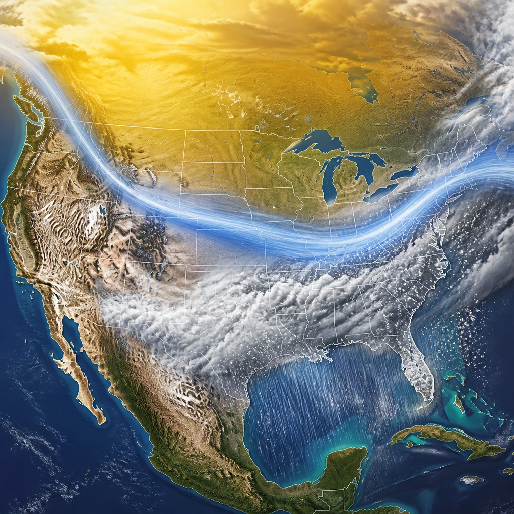
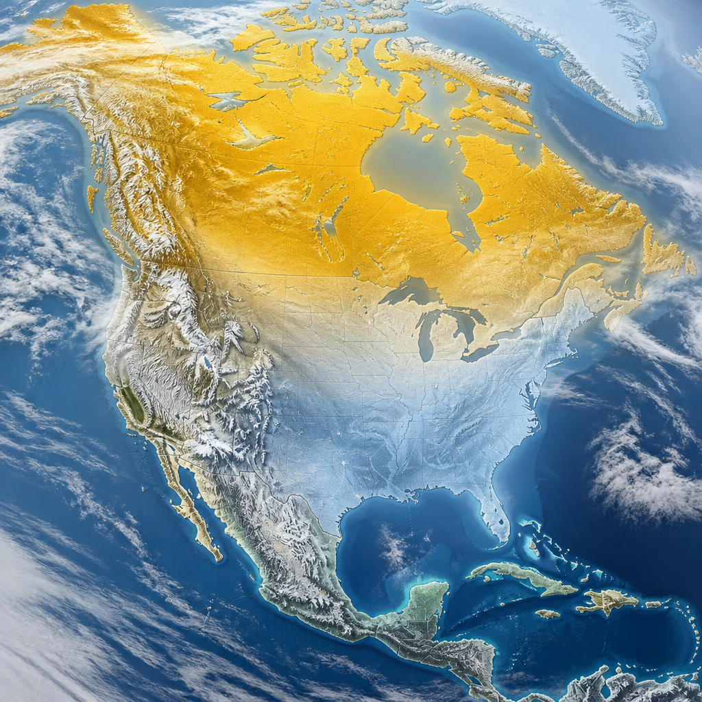
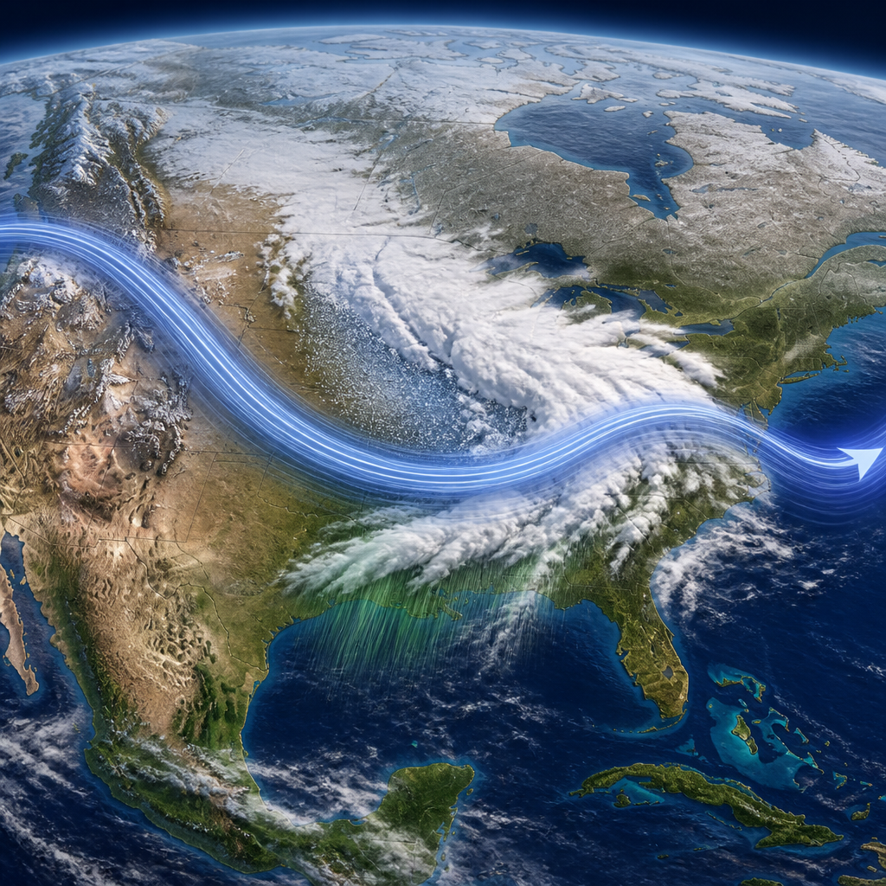

Le prospettive stagionali NOAA per dicembre 2026-febbraio 2027 indicano il probabile effetto di un El Niño molto forte.
Il prossimo inverno negli Stati Uniti potrebbe portare un contrasto netto tra regioni settentrionali e meridionali. Secondo le prospettive stagionali pubblicate dalla NOAA, l’agenzia statunitense che si occupa di oceani e atmosfera, El Niño influenzerà con ogni probabilità il periodo compreso tra dicembre 2026 e febbraio 2027. Le temperature superiori alla media sono favorite in molte aree del Nord, mentre condizioni più umide della media sono attese soprattutto lungo la fascia meridionale e sulla costa orientale.
Il quadro non descrive il tempo che farà in un singolo giorno né stabilisce quanta neve cadrà in una città. È invece una previsione stagionale: valuta se, nell’insieme dei mesi considerati, aumentano le probabilità di temperature o precipitazioni sopra, vicino o sotto la media. In questo caso, il principale elemento preso in esame è un El Niño molto forte, una condizione che può modificare i grandi schemi della circolazione atmosferica.
Le probabilità maggiori di temperature superiori alla media riguardano la California settentrionale, il Pacifico nord-occidentale, il Midwest, la valle del Mississippi, gran parte dell’Est, l’Alaska, Porto Rico e le Isole Vergini statunitensi. Nelle mappe della NOAA, le probabilità più elevate si concentrano anche nel Pacifico nord-occidentale, nelle Montagne Rocciose settentrionali, nel Midwest, nella valle del Mississippi e in gran parte dell’Est.
Per alcune zone del Sud-Est, compresa la Florida, sono invece più probabili temperature vicine alla media stagionale. Hawaii e gran parte del Sud-Ovest si trovano in una situazione di maggiore incertezza: per queste aree, le possibilità di una stagione più fredda, vicina alla media o più calda sono considerate equivalenti.

Sul fronte delle precipitazioni, la NOAA indica condizioni più umide della media lungo la fascia meridionale, dal Sud-Ovest al Sud-Est, e lungo la costa orientale. In inverno, precipitazioni significa l’insieme di pioggia, neve e altri fenomeni che portano acqua al suolo. L’indicazione non equivale quindi a una previsione degli accumuli di neve: questi ultimi, spiega la NOAA, in genere non sono prevedibili con più di una settimana di anticipo.
Probabilità più alte di condizioni più secche della media sono invece previste per le Hawaii, gran parte dell’Alaska, le aree montuose del Nord, alcune zone dei Grandi Laghi e le isole del Pacifico occidentale. Per l’Ovest intermontano, le pianure settentrionali, la valle dell’Ohio, Porto Rico e le Isole Vergini statunitensi, nessuno dei tre possibili esiti — sotto la media, vicino alla media o sopra la media — prevale sugli altri.
La ragione di questo assetto risiede nello spostamento previsto della corrente a getto. La corrente a getto è una fascia di venti molto forti alle alte quote dell’atmosfera, capace di guidare il passaggio delle perturbazioni. Decenni di osservazioni indicano che un El Niño molto forte tende a spostarla verso sud e verso est sugli Stati Uniti continentali. Questo aumenta le probabilità di tempo più perturbato nelle regioni meridionali.

L’aumento delle precipitazioni potrebbe contribuire a migliorare o far terminare le condizioni di siccità nel Sud-Ovest, nelle pianure meridionali, nel Sud-Est e in parti della costa orientale entro la fine di gennaio. La siccità è una prolungata carenza d’acqua rispetto alle condizioni attese. Al contrario, condizioni di siccità potrebbero svilupparsi o peggiorare in parti delle Montagne Rocciose settentrionali, nell’Oregon nord-orientale e nello Stato di Washington orientale.
La NOAA sottolinea però che più precipitazioni non significano automaticamente minori rischi. Quando piogge o neve arrivano in quantità eccessiva su terreni asciutti, possono favorire alluvioni improvvise e colate di fango distruttive. Per questo l’agenzia invita comunità e singoli a prepararsi in anticipo alla stagione invernale.
Per la stagione 2026-2027, il Servizio meteorologico nazionale statunitense ha reso operativo un portale probabilistico sulle precipitazioni. La piattaforma permette di consultare, attraverso mappe interattive, tabelle e grafici, gli scenari di quantità basse, attese e alte di neve, ghiaccio e pioggia. Mostra inoltre la probabilità di superare specifiche soglie di precipitazione, fornendo informazioni utili ai responsabili locali e alle strutture di emergenza.
Nella stessa stagione, alcuni avvisi per bufere di neve e tempeste di ghiaccio potranno usare una formulazione riservata a situazioni particolarmente pericolose. Sarà impiegata per eventi rari nei quali i previsori hanno elevata fiducia in una bufera o una tempesta di ghiaccio di gravità storica, con pericolo imminente per la vita e possibili interruzioni senza precedenti dei servizi di emergenza.
Per l’inverno tra dicembre 2026 e febbraio 2027, la NOAA favorisce temperature sopra la media in varie zone del Nord e dell’Est degli Stati Uniti, oltre che in Alaska, Porto Rico e nelle Isole Vergini statunitensi. Precipitazioni sopra la media sono più probabili dal Sud-Ovest al Sud-Est e lungo la costa orientale. La siccità potrebbe migliorare in molte regioni, ma piogge intense su suoli asciutti possono aumentare il rischio di alluvioni improvvise e colate di fango.
Questo articolo l'hai letto sul blog di Meteo News Radar: un'app che ti mostra da dove vengono i numeri, invece di limitarsi a dartelo. E ogni mattina ne trovi uno nuovo come questo.